Hi! you can call me Matt. I'm a student, artist, programmer, and designer.
I'm currently studying Digital Arts and Design,
and I consider myself a Jack-of-all-trades.
Scroll down to see some of my work!
Or click to learn more about me.
Im a Czech student currently living in Ireland. I've always been fascinated by games. I've been making my own board games with cardboard scraps since I was a kid, but none of them really became popular outside my family. I also always loved art as a form of expression.
When I was choosing a college to go to, I decided to go on my own path into a Games Development course in a whole different country, following that childhood hobby, as well as my interest in programming. I switched courses in my second year to Interactive Digital Arts and Design, to diversify my skillset apart from just programming, and found out that I really enjoy designing, both games and websites!
The course is full of learning with many different programs like Photoshop, Maya, Spine, Aseprite, or just regular od HTML and CSS.
In my spare time I run the college's board game society, or I run, literally. I also like cooking and hiking, and I'm a huge indie game nerd.
But enough about me, and more about my work.
Im a Czech student currently living in Ireland. I've always been fascinated by games. I've been making my own board games with cardboard scraps since I was a kid, but none of them really became popular outside my family. I also always loved art as a form of expression.
When I was choosing a college to go to, I decided to go on my own path into a Games Development course in a whole different country, following that childhood hobby, as well as my interest in programming. I switched courses in my second year to Interactive Digital Arts and Design, to diversify my skillset apart from just programming, and found out that I really enjoy designing, both games and websites!
The course is full of learning with many different programs like Photoshop, Maya, Spine, Aseprite, or just regular od HTML and CSS.
In my spare time I run the college's board game society, or I run, literally. I also like cooking and hiking, and I'm a huge indie game nerd.
But enough about me, and more about my work."
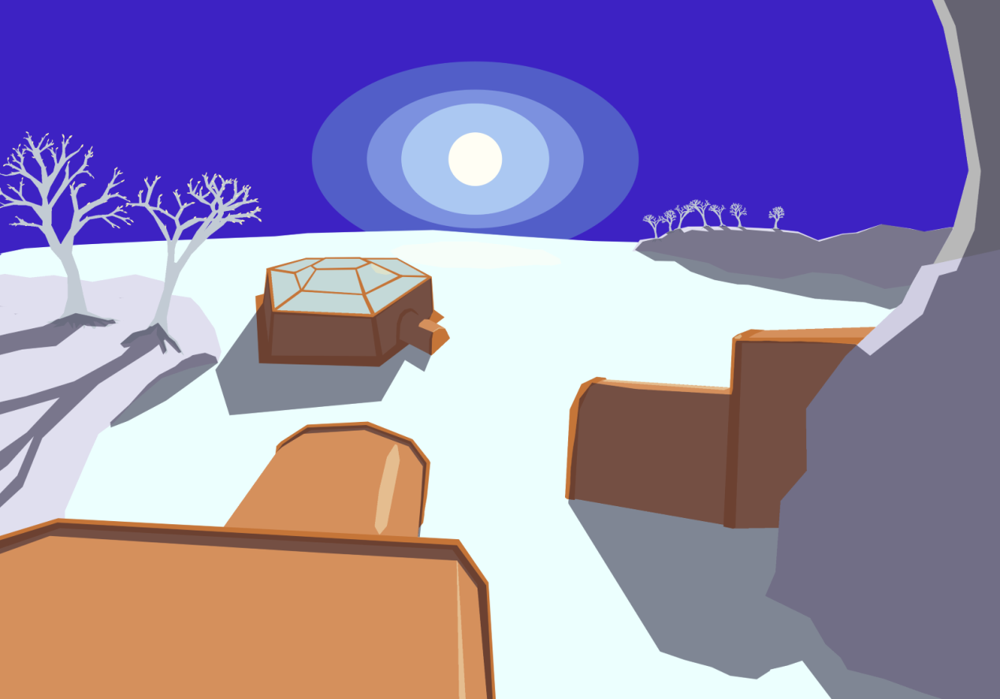 3D Art
Our 3D digital art project for our second semester of our second year was to worldbuild an alien planet, and create assets that fit into that world.
I thought of a world based on an ice planet, where life still exists deep the ice, but only sparingly. I imagined a hardy species that can survive in any climate, that is trying to colonize the planet, living on the surface, and discovering the life underwater. They would build these hexagonal structures, among which were greenhouses to sustain themselves
We created concept art, as well as 3D models. I used Maya 2023 for the 3D modelling and Photoshop for concepts. We used a variety of Mayas tools to create models, a terrain sculpt, and flesh out our world.
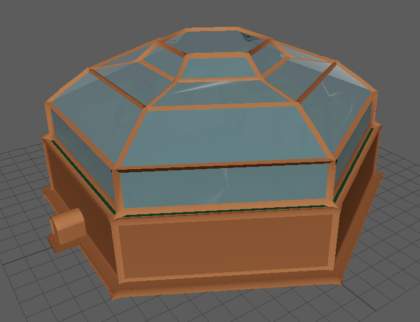
the initial vision
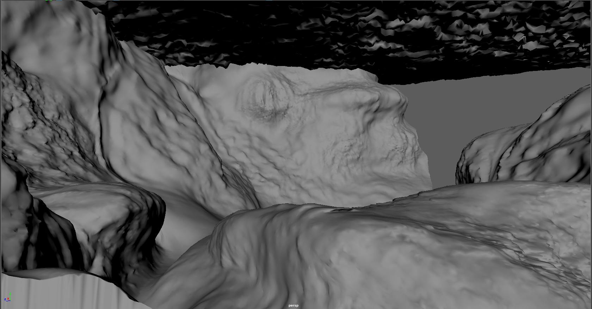 Underwater terrain
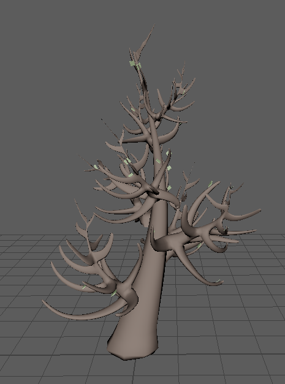 Surface trees, still alive.
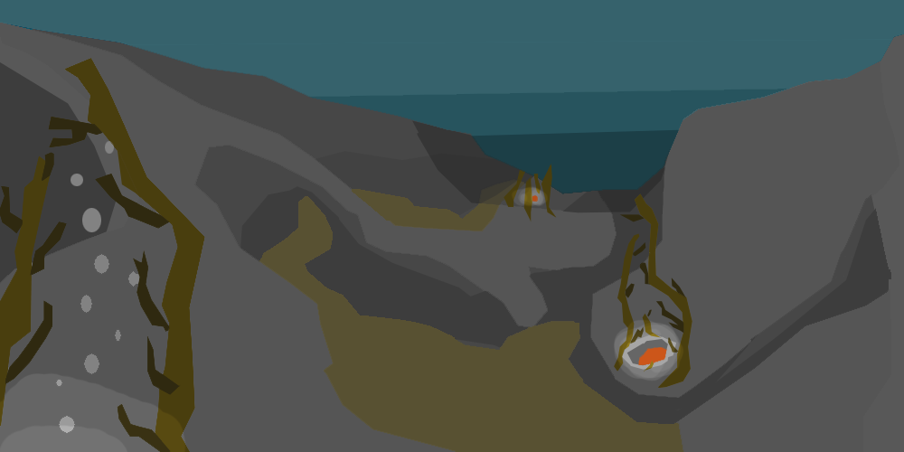 I have imagined more wildlife for the underwater section, but that was out of scope for the project.
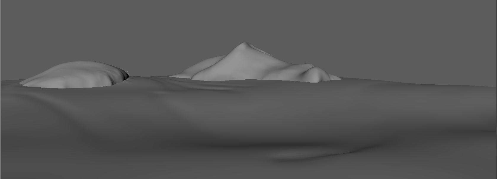 Surface terrain
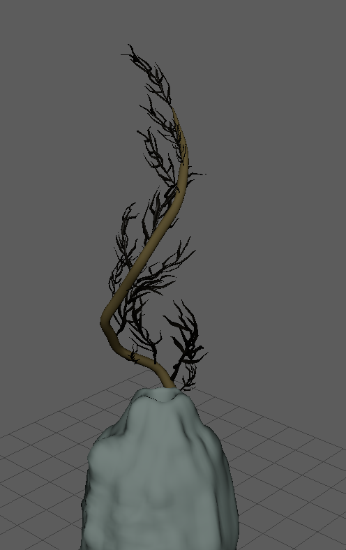 Geothermal kelp
Cheat your way through
This is the very first game I made, in my first year of college. A simple premise - copy answers from your classmate while the teacher is looking the other way, try to finish the test before the time runs out. if you get caught by the teacher, you lose!
This was inspired by many flash games that work on the same premise. The game is definitely a bit rough around the edges, but it still holds a special place in my heart.
This was mainly a programming project, but I also made my own assets - although they are very basic, they still work well enough for the game.
The animations of the player (triangle head) would follow your cursor, which had to be hovering above the classmates desk to copy answers.
You can check the project out
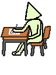 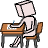
Clowning Around
For Global Game Jam 2024, the theme was: "Make Me Laugh". I came forward with an idea for a puzzle platformer, where you play as a clown in a circus world. You can make a clown joke (honk your nose) near the resident walking mouths to make them laugh, which creates a physical HaHa, which can interact with the environment - pop balloons, break platform, etc.
My role on the team was being the Artist and Creative Lead.
Our team ended up winning a "Best use of theme" award at the end of the weekend.
You can check the github repository
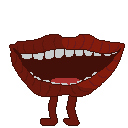
Aducational Website
As a group rpject for Web User Interface Design, our goal was to design and develop an educational website, similar to W3Schools or Khan Academy. We created it using HTML, CSS, and Javascript.
The project had 5 stages: Research and Planning, Design, Development, Testing and Presentation.
My input was focused on the research and design part of the process, Where I took into account trends among educational websites and how their layout allows for easy navigation. I made sure to also add finishing touches like CSS animations.
The Website is still live, click to have a look!
Or scroll down too see some snippets from the design process.
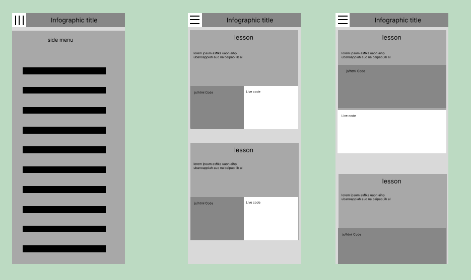
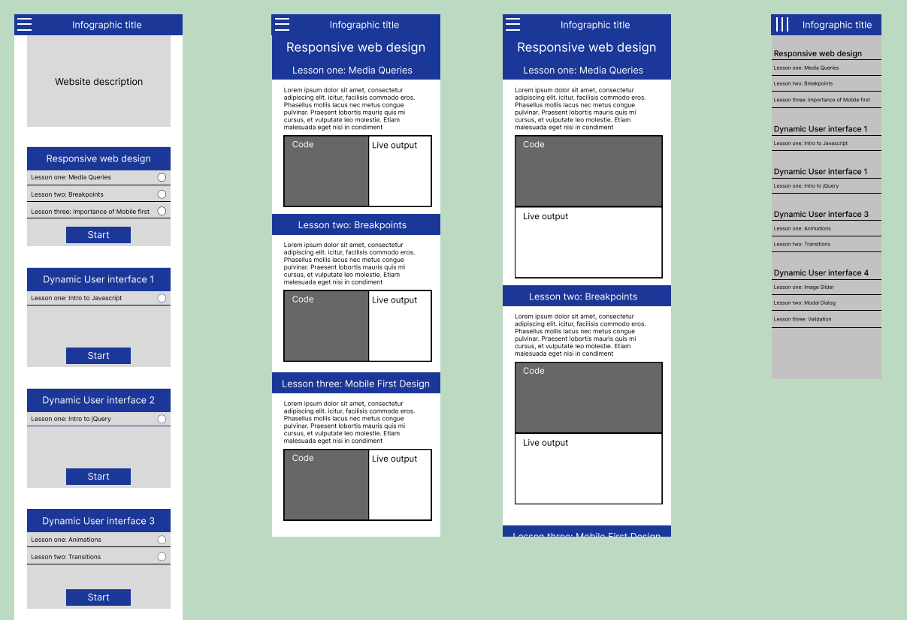
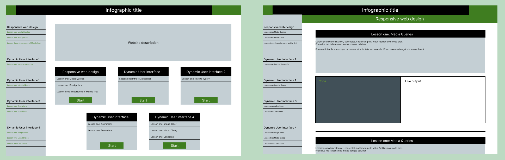
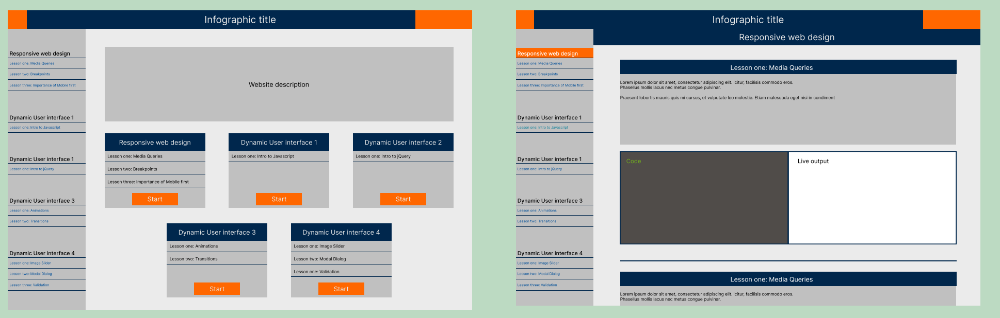
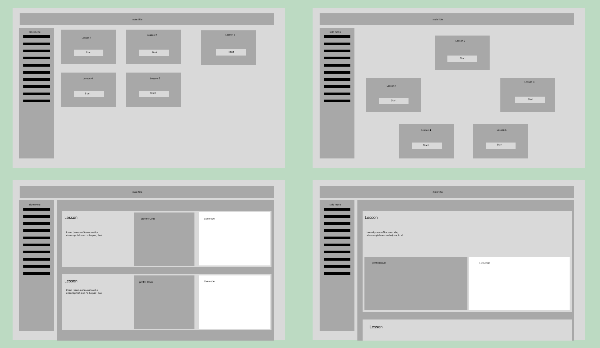
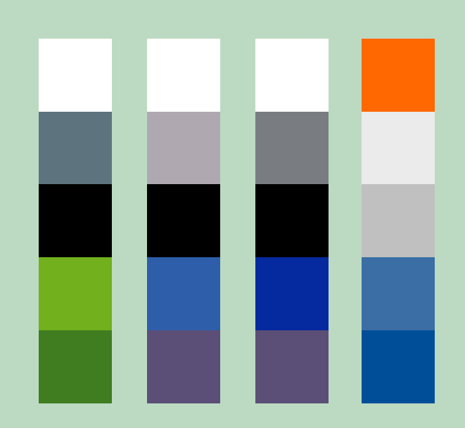
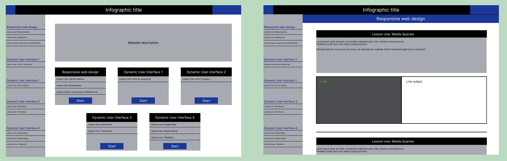
'
Erootica
For Global Game Jam 2023, the theme was: "Growth". Naturally, I joined a team of students to make a Flower Dating Simulator.
The game combined elements of farming and typical visual novel dialogue, where you play as a gardener taking care of sentient flowers. Our team leader advocated for us to use Godot to develop the game, which was a challenge for us.
My role on the team was the writer. We needed a lot of dialogue for the game, so I wrote about 6000 words of dialogue over 2 days, for 4 flowers with different personalities.
I dipped my toes into Godot as well, but my main focus was on the writing.
You can check the github repo
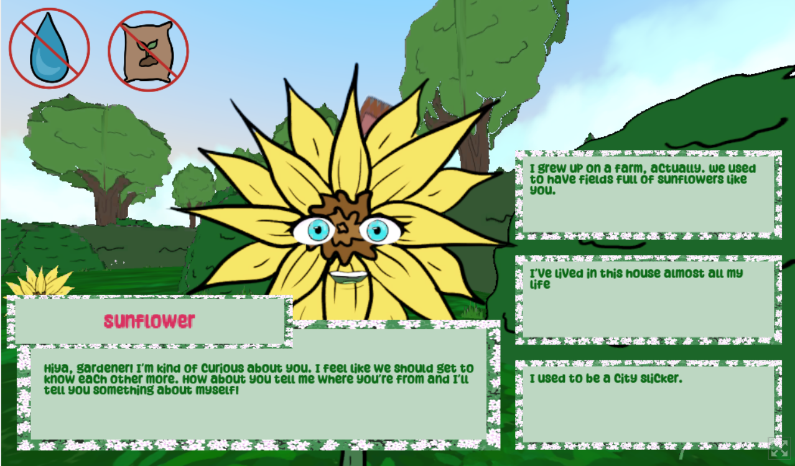
Hooked
For our final project for First Year, we had to make a game as a group of 4. Out of a few ideas, our lecturer picked a fishing game for us to make. We divided ourselves into 2 programmers and 2 asset artists, and since we were learning pixelart at the time, we decided on a pixelart design.
I was in charge of making the shop, for which i made this Flash game-like design. I also made all the menu elements.
We ran out of time to finish the game, however, the assets were mostly complete.
Here are some of the assets I made!
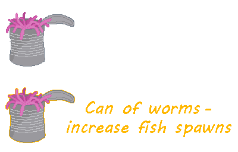 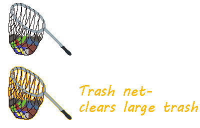 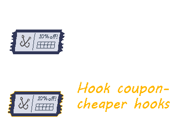 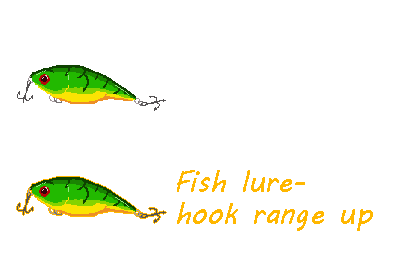 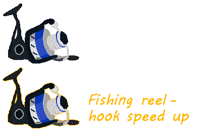 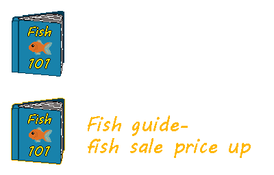
To Do App
One of our projects for UI Protoyping Module, we created an app we would like to use ourselves. I devised a To-Do app which helps you slot your thoughts into your schedule.
The idea is simple - everything starts out as a thought, which is nebulous and undefined. But once you add some parameters, like a deadline or a timeslot, they become part of your tasklist or calendar
Our goal was to create both a visual wireframe for the app, as well as a set of detailed instructions for a developer who would be making the app.
We used Figma and Penpot for oour designs. Click to see all the assets and document with feature requirements, or scroll down for the layout designs.
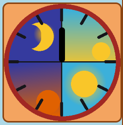 On The Clock
This was my second year first semester project. Our goal was to make a game inside a webpage with a theme of time travel.
I chose to make a time-based puzzle, where you try to align schedules of your friends to meet up at the campfire at the same time. You can physically rotate the clock next to the game screen to change the time, and you can affect your friends schedules by interacting with the environment.
The game is technically finished, however, I plan on adding some quality of life features so that the game can be played without a personal explanation.
I am currently working on a more polished version, so this is a WIP!
This is purely a programming project for me, as all the assets are borrowed from royalty free sources.